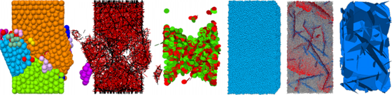

PFC


基本命令
PFC 所使用的主要命令汇总于下方列表中。请注意，这些命令中既有 PFC 专用命令，也有 3DEC 和 FLAC3D 中同样常用的命令。
| c 球体（ball） | c 历史（history） |
| c 砖块（brick） | c 测量（measure） |
| c 颗粒簇（clump） | c 模型（model） |
| c contact | c 绘图（plot） |
| c 数据（data） | c 程序（program） |
| c dfn（离散裂隙网络） | c 项目（project） |
| c 域（domain） | c rblock（刚性块体） |
| c FISH函数（fish） | c 表格插值取值（table） |
| c 碎片（fragment） | c 追踪（trace） |
| c 几何（geometry） | c 墙体（wall） |
| c 分组（group） |
本节内容
| 这些内容对您有帮助吗？… | FLAC3D © 2019, Itasca | 原文更新于 2020 年 10 月 8 日 |